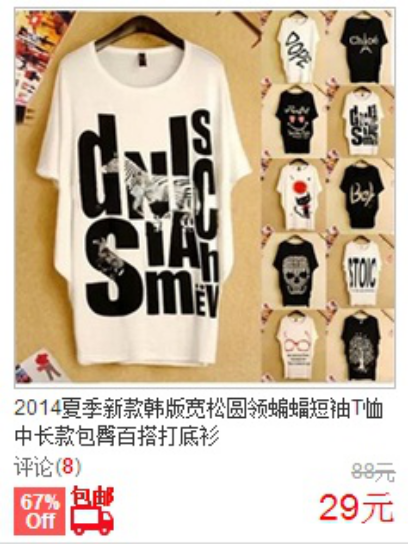

标签选择器其实就是html代码中的标签。如右侧代码编辑器中的html、body、h1、p、img。例如下面代码：
font-size:12px;line-height:1.6em;
上面的css样式代码的作用：
为p标签设置12px字号，行间距设置1.6em的样式。
类选择器在css样式编码中是最常用到的，代码编辑器中的代码:可以实现为“胆小如鼠”、“勇气”字体设置为红色。 语法： .类选器名称{ css样式代码; }
相同点：可以应用于任何元素
不同点： 1、ID选择器只能在文档中使用一次。与类选择器不同，在一个HTML文档中， ID选择器只能使用一次，而且仅一次。而类选择器可以使用多次。
可以使用类选择器词列表方法为一个元素同时设置多个样式。我们可以为一个元素同时设多个样式，但只可以用类选择器的方法实现，ID选择器是不可以 的（不能使用 ID 词列表）。
子选择器，即大于符号(>),用于选择指定标签元素的第一代子元素。如下代码：
.food>li{
border:1px solid red;
}
这行代码会使class名为name下的子元素b（水果、蔬菜）加入红色实线边框。
看这个水果，蔬菜加入了红色实线边框
它允许给html不存在的标签（标签的某种状态）设置样式，比如说我们给html中一个标签元素的鼠标滑过的状态来设置字体颜色：
a:hover{
color:red;
}
上面一行代码就是为 a 标签鼠标滑过的状态设置字体颜色变红。这样就会使第一段文字内容中的“胆小如鼠”文字加入鼠标滑过字
体颜色变为红色特效。关于伪选择符：
当你想为html中多个标签元素设置同一个样式时，可以使用分组选择符（，），如下代码为右侧代码编辑器中的h1、span标签同时设置字
体颜色为红色:h1,span{color:red;} 它相当于下面两行代码：
h1
{
color:red;
}
span{
color:red;
}
继承是一种规则，它允许样式不仅应用于某个特定html标签元素，而且应用于其后代。比如下面代码：如某种颜色应用于p标签， 这个颜色设置不仅应用p标签，还应用于p标签中的所有子元素文本，这里子元素为span标签。
可见以上p中的文本与span中的文本都设置为了红色。但注意有一些css样式是不具有继承性的。如border:1px solid red;
在上面例子中它代码的作用只是给p标签设置了边框为1像素、红色、实心边框线，而对于子元素span是没用起到作用的。
层叠就是在html文件中对于同一个元素可以有多个css样式 存在，当有相同权重的样式存在时，会根据这些css样式的前后顺序来决定， 处于最后面的css样式会被应用。
如下面代码: p{color:red;} p{color:green;}
三年级时， 我还是一个胆小如鼠的小女孩。
最后 p 中的文本会设置为green，这个层叠很好理解， 理解为后面的样式会覆盖前面的样式。 所以前面的css样式优先级就不难理解了： 内联样式表（标签内部）> 嵌入样式表（当前文件中）> 外部样式表（外部文件中）。有些特殊的情况需要为某些样式设置具有最高权值，这时候我们可以使用!important来解决。 如下代码： p{color:red!important;} p{color:green;}
三年级时，我还是一个胆小如鼠的小女孩。
这时 p 段落中的文本会显示的red红色。 注意：!important要写在分号的前面 这里注意当网页制作者不设置css样式时，浏览器会按照 自己的一套样式来显示网页。并且用户也可以在浏览器中设置自己习惯的样式，比如有的用户习惯把字号设置为大一些，使其查看网页的 文本更加清楚。这时注意样式优先级为：浏览器默认的样式 < 网页制作者样式 < 用户自己设置的样式，但记住!important优先级样式是 个例外，权值高于用户自己设置的样式
为网页中的文字设置字体为宋体。 body{font-family:“宋体”;} 这里注意不要设置不常用的字体， 因为如果用户本地电脑上如果没有安装你设置的字体，就会显示浏览器默认的字体。
可以使用下面代码设置网页中文字的字号为12像素，并把字体颜色设置为 #666(灰色)： body{font-size:12px;color:#666}
p span{font-weight:bold;} 在这里大家可以看到，如果想为文字设置粗体是有单独的css样式来实现的，再 不用为了实现粗体样式而使用h1-h6或strong标签了。
以下代码可以实现文字以斜体样式在浏览器中显示： p a{font-style:italic;}
三年级时，我还是一个胆小如鼠的小女孩。
有些情况下想为文字设置为下划线样式，这样可以在视觉上强调文字，可以使 用下面代码来实现： p a{text-decoration:underline;}
三年级时，我还是一个胆小如鼠的小女孩。
如果想在网页上设置删除线怎么办，这个样式在电商网站上常会见到 
上图中的原价上的删除线使用下面代码就可以实现： .oldPrice{text-decoration:line- through;}
中文文字中的段前习惯空两个文字的空白，这个特殊的样式可以用下面代码来实现： p{text-indent:2em;}
1922年的春天，一个想要成名名叫尼克卡拉威（托比?马奎尔Tobey Maguire 饰） 的作家，离开了美国中西部，来到了纽约。那是一个道德感渐失，爵士乐流行，走私为王，股票飞涨的时代。 为了追寻他的美国梦，他搬入纽约附近一海湾居住。
注意：2em的意思就是文字的2倍大小。这一小节我们来学习一下另一个在段落排版中起重要作用的行间距（行高）属性（line-height）， 如下代码实现设置段落行间距为1.5倍。 p{line-height:2em;}
菲茨杰拉德，二十世纪美国文学巨擘之一，兼具作家和编剧双重身份。他以诗人的敏感和戏剧家的想象为"爵士乐时代"吟 唱华丽挽歌，其诗人和梦想家的气质亦为那个奢靡年代的不二注解。
想为块状元素中的文本、图片设置居中样式吗？可以使用text-align样式代码，如下代码可实现文本居中显示。
(那么什么是块状元素呢？在后面的11-1、11-2小节中会讲到。)
h6{ text-align:center; }
什么是块级元素？在html中div>、 p>、h1>、form>、ul> 和 li>就是块级元素。设置display:block就是将元素显示为块级元素
。如下代码就是将内联元素a转换为块状元素，从而使a元素具有块状元素特点。 a{display:block;}
块级元素特点：
1、每个块级元素都从新的一行开始，并且其后的元素也另起一行。（真霸道，一个块级元素独占一行）
2、元素的高度、宽度、行高以及顶和底边距都可设置。
3、元素宽度在不设置的情况下，是它本身父容器的100%（和父元素的宽度一致），除非设定一个宽度。
在html中，span>、a>、 strong> 和em>就是典型的内联元素（行内元素）（inline）元素。 当然块状元素也可以通过代码display:inline将元素设置为内联元素。如下代码就是将块状元素div转换为内联元素， 从而使 div 元素具有内联元素特点。 div{ display:inline; } ......
内联块状元素（inline-block）就是同时具备内联元素、块状元素的特点，代码display:inline-block就是将元素设置为内联块状元素。
(css2.1新增)，img>input>,标签就是这种内联块状标签。
inline-block 元素特点：
1、和其他元素都在一行上；
2、元素的高度、宽度、行高以及顶和底边距都可设置
盒子模型的边框就是围绕着内容及补白的线，这条线你可以设置它的粗细、样式和颜色(边框三个属性)。
如下面代码为 div 来设置边框粗细为 2px、样式为实心的、颜色为红色的边框： div{ border:2px solid red; }
上面是 border 代码的缩写形式，可以分开写： div{ border-width:2px; border-style:solid; border-color:red; }
注意：
1、border-style（边框样式）常见样式有： dashed（虚线）| dotted（点线）| solid（实线）。
2、border-color（边框颜色）中的颜色可设置为十六进制颜色，如: border-color:#888;//前面的井号不要忘掉。
3、border-width（边框宽度）中的宽度也可以设置为： thin | medium | thick（但不是很常用），最常还是用象素（px）。
div{border-bottom:1px solid red;}
同样可以使用下面代码实现其它三边(上、右、左)边框的设置：border-top:1px solid red; border-right:1px solid red;border-left:1px solid red;
盒模型宽度和高度和我们平常所说的物体的宽度和高度理解是不一样的，css内定义的宽（width）和高（height），指的是填充以里的内容范围。 因此一个元素实际宽度（盒子的宽度）=左边界+左边框+左填充+内容宽度+右填充+右边框+右边界。
元素内容与边框之间是可以设置距离的，称之为“填充”。填充也可分为上、右、下、左(顺时针)。如下代码：
div{padding:20px 10px 15px 30px;}
顺序一定不要搞混。可以分开写上面代码：div{padding:10px;}
如果上下填充一样为10px，左右一样为20px，可以这么写： div{padding:10px 20px;}元素与其它元素之间的距离可以使用边界（margin）来设置。边界也是可分为上、右、下、左。
如果说布局模型是本，那么 CSS 布局模板就是末了，是外在的表现形式。 CSS包含3种基本的布局模型，用英文概括为：Flow、Layer 和 Float。 在网页中，元素有三种布局模型： 1、流动模型（Flow） 2、浮动模型 (Float) 3、层模型（Layer） 这三个布局模型究竟是 什么布局？
先来说一说流动模型，流动（Flow）是默认的网页布局模式。也就是说网页在默认状态下的 HTML 网页元素都是根据流动模型来分布网页内容的。
流动布局模型具有2个比较典型的特征：
第一点，块状元素都会在所处的包含元素内自上而下按顺序垂直延伸分布，因为在默认状态下，块状元素的宽度都为100%。实际上，块状元素都会
以行的形式占据位置。
第二点，在流动模型下，内联元素都会在所处的包含元素内从左到右水平分布显示。（内联元素可不像块状元素这么霸道独占一行
块状元素这么霸道都是独占一行，如果现在我们想让两个块状元素并排显示，怎么办呢？
不要着急，设置元素浮动就可以实现这一愿望。 任何元素在默认情况下是不能浮动的，
但可以用 CSS 定义为浮动，如 div、p、table、img 等元素都可以被定义为浮动。
如下代码可以实现两个 div 元素一行显示。
div{ width:200px; height:200px; border:2px red solid; float:left; }
当然你也可以同时设置两个元素右浮动也可以实现一行显示。
div{ width:200px; height:200px; border:2px red solid; float:right; }
又有小伙伴问了，设置两个元素一左一右可以实现一行显示吗？
当然可以： div{ width:200px; height:200px; border:2px red solid; } #div1{float:left;} #div2{float:right;}
什么是层布局模型？
层布局模型就像是图像软件PhotoShop中非常流行的图层编辑功能一样，每个图层能够精确定位操作 ，但在网页设计领域，由于网页大小的活动性，层布局没能受到热捧。但是在网页上局部使用层布局还是有其方便之处的。
下面我们来学习一下html中的层布局。 如何让html元素在网页中精确定位，就像图像软件PhotoShop中的图层一样可以对每个图层能够精确定位操作。 CSS定义了一组定位（positioning）属性来支持层布局模型。层模型有三种形式： 1、绝对定位(position: absolute) 2、相对定位(position: relative) 3、固定定位(position: fixed)
如果想为元素设置层模型中的绝对定位，需要设置position:absolute(表示绝对定位)，这条语句的作用将元素从文档流中拖出来， 然后使用left、right、top、bottom属性相对于其最接近的一个具有定位属性的父包含块进行绝对定位。 如果不存在这样的包含块，则相对于body元素，即相对于浏览器窗口。
如果想为元素设置层模型中的相对定位，需要设置position:relative（表示相对定位）， 它通过left、right、top、bottom属性确定元素在正常文档流中的偏移位置。 相对定位完成的过程是首先按static(float)方式生成一个元素(并且元素像层一样浮动了起来)，然后相对于以前的位置移动， 移动的方向和幅度由left、right、top、bottom属性确定，偏移前的位置保留不动。
虽然div元素相对于以前的位置产生了偏移，但是div元素以前的位置还是保留着
fixed：表示固定定位，与absolute定位类型类似，但它的相对移动的坐标是视图（屏幕内的网页窗口）本身。 由于视图本身是固定的，它不会随浏览器窗口的滚动条滚动而变化，除非你在屏幕中移动浏览器窗口的屏幕位置，或改变浏览器窗口的显示大小， 因此固定定位的元素会始终位于浏览器窗口内视图的某个位置，不会受文档流动影响，这与background-attachment:fixed;属性功能相同。 如屏幕左侧的返回目录
使用position:absolute可以实现被设置元素相对于浏览器（body）设置定位,但是必须遵守下面规范：
1、参照定位的元素必须是相对定位元素的前辈元素：
2、参照定位的元素必须加入position:relative;
3、定位元素加入position:absolute，便可以使用top、bottom、left、right来进行偏移定位了。